Chapter 6 단일변량 분산분석
단일변량 분산분석은 독립변수들의 효과를 분석하는데 사용되는 방법이다. 일반적으로 독립변수의 수에 따라 분산분석의 종류가 나뉘게 되는데, 단일요인과 양적인 종속변수와의 관계는 일원배치 분산분석이 된다.
두 표본평균의 차이에 대한 검정과 달리 실제 생활이나 학문연구에서는 두 개 이상의 여러 모집단을 한꺼번에 비교하는 경우가 있다.
- 교육수준별로 평균 월급차이를 조사하는 경우
- 교육수준을 고졸, 전문대졸, 대졸 등으로 구분한 후에 각 집단별 월급액을 비교 연구할 때 단일변량 분산분석(Analysis of Variance : AVONA)기법을 이용할 수 있다. 이 기법은 두 개 이상의 모집단 평균차이를 한 번에 검정 할 수 있게 해준다.
단일변량 분산분석은 독립변수의 효과를 분석하기 위해 기본적으로 사용하며, 이때 교육수준은 독립변수가 되며, 월급액은 종속변수가 된다. 그리고 독립변수를 요인(factor)이라고 부른다. 한 요인 내에서 실험개체에 영향을 미치는 여러 가지 특별한 형태를 요인수준(factor level) 또는 처리(treatment)라고 한다. 교육수준을 요인이라고 하면, 고졸, 전문대졸, 대졸은 한 요인내의 요인수준 또는 처리가 된다.
단일변량 분산분석은 독립변수의 종류에 따라 여러 종류로 나눌 수 있다. 월급액과 교육수준사이의 관계를 분석하는 것을 일원분산분석(one-way ANOVA)이라고 한다. 이 모형에 성별요인을 추가하여 두 요인이 월급액에 미치는 영향을 조사한다면 이원분산분석(two-way ANOVA)이 된다. 요인의 수가 늘어나면 종속변수에 대한 영향력을 더 정밀하게 분석 할 수 있다.
6.1 일원배치 분산분석
- 다음의 가설 검정을 한다. \[ H_0: \mu_1=\mu_2=\mu_3 \quad vs. \quad H_1: 세 \,\,\,평균이 \,\,\,반드시 \,\,\,같지는 \,\,\,않다. \]
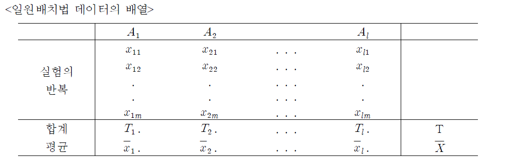
먼저 제 1수준의 m개의 데이터에서 무한회 실험을 행하면 그 때 얻어진 데이터는 다음과 같은 정규분포를 따른다.
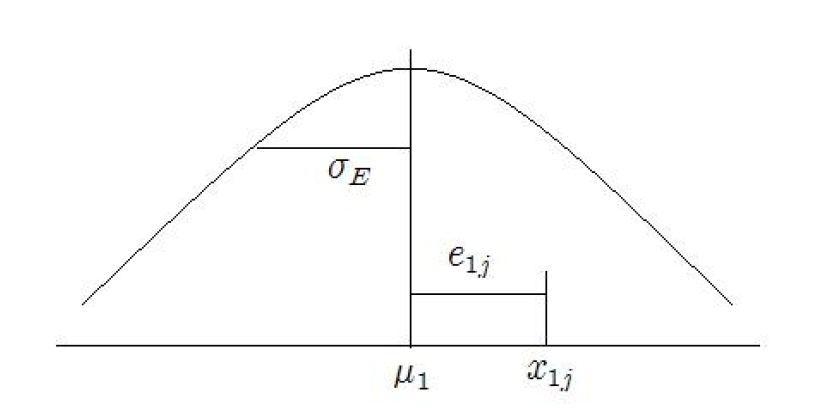
\[ x_{1j}=\mu_1 + e_{1j}, \quad j=1,2,\ldots, m \]
다른 수준에서도 이와 같이 성립하므로
\[ x_{ij}=\mu_1 + e_{ij}, \quad i=1,2,\ldots,l \quad j=1,2,\ldots, m \]
실험 전체의 모평균을 \(\mu\)라 하면 \(\mu=\sum_{i=1}^l \mu_i/l\).
\(\mu_i\)와 \(\mu\) 간의 차이를 \[ \alpha_i =\mu_i -\mu \]
즉, 모평균 \(\mu_i\)가 전체의 모평균 \(\mu\)로부터 어느 정도의 치우침을 가는가를 나타내는 수치로 인자 A의 주효과(main effect)라고 부른다.
이 때 일원배치 분산분석 모형은 다음과 같다.
\[ x_{ij}=\mu_i +\epsilon_{ij}, \quad \epsilon_{ij} \sim N(0, \sigma^2) \,\,\,\,\,\,\,\,\,\,\,\,\,\,\,\,\,\,\,\,\,\,\,\,\,\,\,\,\,\,\,\,\,\,\,\,\,\,\,\,\,\,\,\,\,\,\,\\=\mu+\alpha_i +\epsilon_{ij}, \,\,\, i=1,\ldots,l, \,\,\, j=1,\ldots,m \]
<분산분석표>
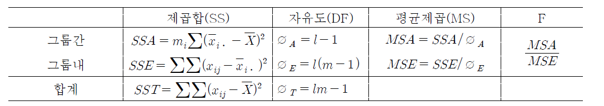
검정통계량(F)이 임계값보다 작으면 귀무가설을 채택하고, 평균들이 같다고 결론을 내린다. 반대로 F값이 임계값보다 커서 귀무가설을 기각시키는 경우에는 다음 단계로 진행한다.
일원배치 분산분석은 다음과 같이 실행한다.
분석(A)
평균 비교(M)
일원배치 분산분석(O)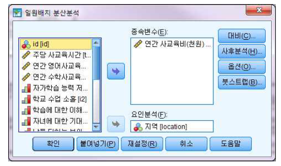
변수상자에서 연간 사교육비(total)을 지정한 후, 종속변수(Dependent List)에 이를 입력하고, 독립변수에 해당하는 변수인 지역(location)을 하단의 요인(Factor)란에 입력한다.
사후 분석
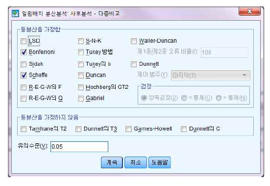
만일 지역에 따라 연간 사교육비의 차이가 존재한다면, 과연 5개 지역들 간에 어떤 차이가 존재하는지에 대해 세부적인 검토가 필요하다. 이러한 추가분석을 사후분석(Post Hoc Multiple Comparisons) 또는 다중비교(Multiple Comparisons)라 한다.
각 수준의 평균값들을 비교하여 대소관계를 파악하는 방법을 다중비교라고 하며 이는 등분산인 경우 분산분석표에서 검정한 결과가 평균의 차이를 인정한 경우나 이분산인 경우 Brown-Forsythe'와Welch’의 검정(이분산인 경우 F 통계량보다 선호 됨)에서 둘 다 유의한 경우에만 실시하는 절차이다.
[결과 : 요인수준의 기술 통계량]
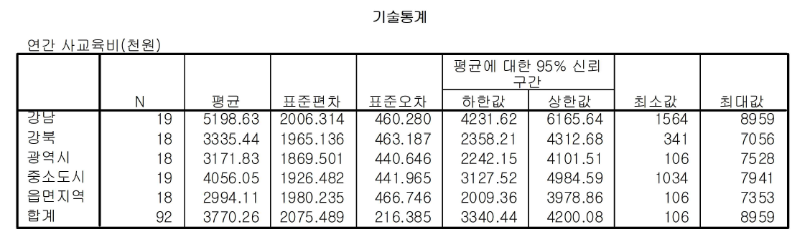
연간 사교육비에 대하여 지역(강남, 강북, 광역시, 중소도시, 읍면지역)에 따른 각 집단의 사례수(N), 평균(Mean), 표준편차(Std.Deviation), 표준오차(Std. Error), 95% 신뢰구간(95% Confidence Interval for Mean)을 나타내고 있다.
[결과 : 모분산의 동질성 검정]
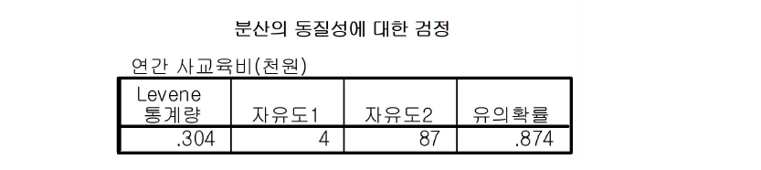
분산분석이 유용하기 위해서는 표본이 무작위적으로 추출되었으며 모집단은 동일한 분산을 가지고 있다는 가정을 충족시켜야 한다. 현재 분석하고 있는 자료가 이러한 가정을 충족시키는지를 알아보기 위해 Levene 통계량을 사용한다. Levene 통계량 값이 0.304로써 P=0.874 > 0.05 이어서 모집단의 분산이 동일하다는 귀무가설이 채택된다. 따라서 다음의 계속적인 분석이 가능하다.
[결과 : 분산분석표]
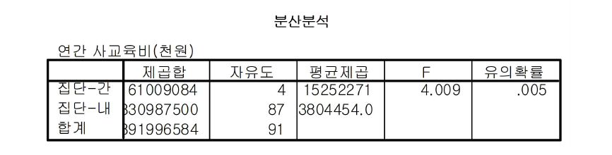
분산분석의 결과는 분산분석표를 통하여 제시하기 때문에 이들 각 통계값이 산출되는 과정을 이해하는 것이 중요하다. 집단간(Between groups) 자유도는 4(요인수준의 수 - 1)로 구해지며, 집단내(Within groups) 자유도는 87(전체관찰수 - 요인수준의 수)이다. 평균제곱은 각각 제곱합을 각 원천별로 자유도로 나눈 값이 되며, F 통계량은 그룹간 평균제곱을 그룹내 평균제곱으로 나눈 값이다.
F 분포에서 F(4, 87, 0.05)의 임계값은 2.48인데, F 통계량 = 4.009 > 2.48이므로, 세 요인수준의 평균이 동일하다는 귀무가설이 기각된다. 이것을 F 분포의 확률로 설명해도 마찬가지인데, 유의확률 p = 0.005 < 0.05 이므로 귀무가설을 기각한다. 따라서 평균차이는 유의한 차이를 나타낸다고 할 수 있다. 다음은 사후분석 결과이다.
[결과 : 사후분석 - 다중비교]
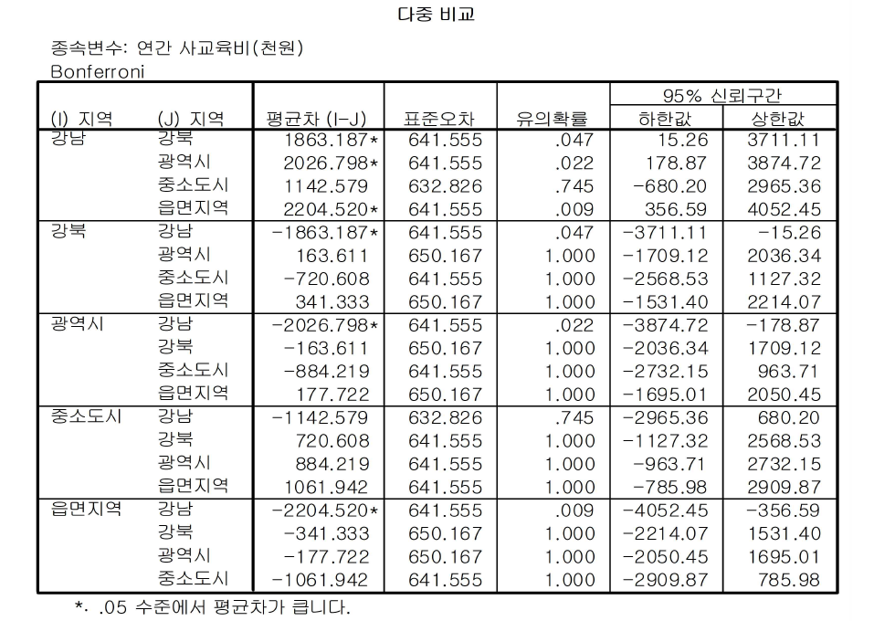
Bonferroni 방법으로 계산된 사후검증을 보면 유의수준 0.05에서 강남과 강북, 강남과 광역시, 강남과 읍면지역간의 연간 사교육비의 평균차이가 유의함을 알 수 있다.
Bonferroni 방법으로 계산된 사후검증을 보면 유의수준 0.05에서 강남과 강북, 강남과 광역시, 강남과 읍면지역간의 연간 사교육비의 평균차이가 유의함을 알 수 있다.
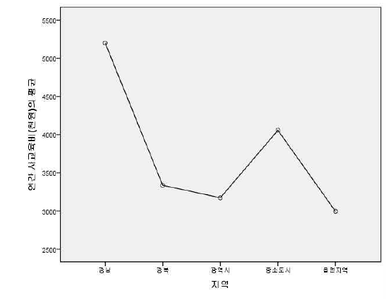
지역에 따른 연간 사교육비를 그래프로 나타내 시각적으로 의사결정을 할 수 있게 해준다. 지역에 따라 연간 사교육비의 차이가 나타남을 알 수 있다. 이때 강남지역의 평균이 가장 높고, 읍면지역의 평균이 가장 낮다.
6.2 이원배치 분산분석
이원배치 분산분석(two-way ANOVA)은 2개 이상의 요인(독립변수)을 이용하여 집단별로 평균 차이를 분석한다. 일원배치 분산분석과의 차이는 몇 가지 있다.
첫째, 요인 혹은 독립변수의 수가 두 개다.
둘째, 독립변수간의 상호작용 여부를 알아내야 한다.
셋째, 이 상호작용을 고려하여 동시에 설명할 것인지 아니면 통제할 것인지 여부를 결정하여야 한다.예를 들어, 평균월급 차이를 설명하기 위해 교육수준과 성별이라는 두 개의 요인을 동시에 채택하는 경우, 각 요인별 평균차이뿐만 아니라 두요인간의 상호작용 효과도 동시에 고려해야 한다.
요인 A와 요인 B의 주효과와 교호작용을 검정하기 위한 귀무가설과 대립가설
\(\quad H_0: \alpha_1=\alpha_2=\ldots =\alpha_I=0 \,\,\, vs. \,\,\, H_1:\alpha_i 들이 \,\,\, 모두 \,\,\, 0은\,\,\, 아니다.\)
\(\quad H_0: \beta_1=\beta_2=\ldots =\beta_J=0 \,\,\, vs. \,\,\, H_1:\beta_j 들이 \,\,\, 모두 \,\,\, 0은\,\,\, 아니다.\)
\(\quad H_0:(\alpha\beta)_{ij}=0 \,\,\, vs. \,\,\, H_1:(\alpha\beta)_{ij}들이 \,\,\, 모두 \,\,\, 0은\,\,\, 아니다.\)
이 때 이원배치 분산분석 모형은 다음과 같다.
\[ y_{ijk}=\mu+\alpha_i+\beta_j+(\alpha\beta)_{ij}+\epsilon_{ijk}, \,\,\, i=1,\ldots,I\,\,\,,j=1,\ldots,J\,\,\,,k=1,\ldots,n \]
여기서 \(\mu\): 전체평균,
\(\alpha_i\): 요인 \(A\)dml \(i\)번째 주효과,
\(\beta_j\): 요인 \(B\)의 \(j\)번째 주효과,
\((\alpha\beta)_{ij}\): 요인 \(A\)의 \(i\)번째 수준과 요인 \(B\)의 \(j\)번째 수준간의 교호작용(interaction)
오차항 \(\epsilon_{ijk}\)는 서로 독립이며, \(\epsilon_{ijk} \sim N(0,\sigma^2)\)
- 교호작용(interaction): 요인 \(A\)의 수준에 따라 요인 \(B\)의 효과가 달라지는 것
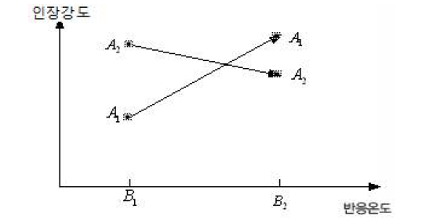
이원배치 분산분석은 다음과 같이 실행한다.
분석(A)
일반선형모형(G)
일변량(U)종속변수(dependent Variable)란에 연간 사교육비(total)를 지정하고, 모수요인(Fixed Factors)란에 지역(location)과 성별(gender)를 지정한다.
종속변수와 모수요인, 변량요인(Random Factors), 공변량(Covariate), WLS 가중값(WLS Weight)는 다음과 같다.

- 모형(Model)
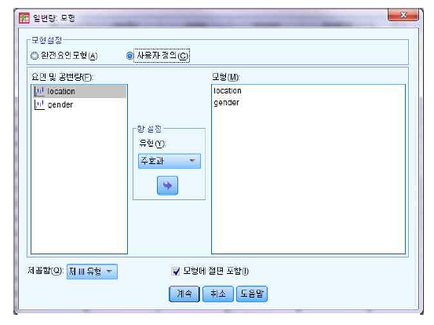
특정 모형을 사용자정의(Custom)으로 설정하고, 왼쪽의 요인 및 공변량 상자로부터 지역(location), 성별(gender)을 지정하여, 항설정(Build Term)의 화살표를 선택하여 모형란에 보낸다. 이때, 교호작용을 살펴보려면 모형설정에서 완전요인모형으로 설정한다.
- 도표
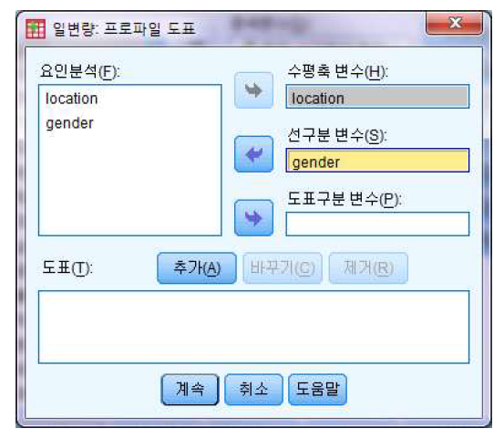
수평축 변수(Horizontal Axis)에 지역(location)을 지정하고 선구분 변수(Seperate Lines)에 성별(gender)을 지정한 후 도표(Plot)란에 있는 추가(Add)를 선택한다.
- 사후분석
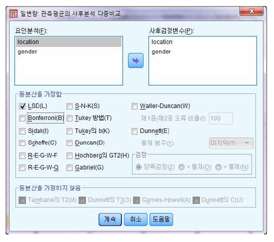
사후검정변수에 지역(location), 성별(gender) 변수를 지정하고 다중비교 통계량 중 LSD(Least Significant Different, 최소유의차)를 선택한다.
- 옵션
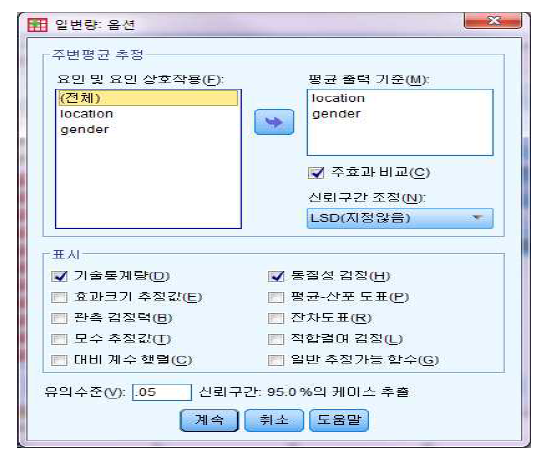
일변량 옵션창의 출력란에 기술통계량(Descriptive Statistics)과 동질성검정(Homogeneity tests)을 지정한다.
[결과 : 두 요인수준들의 평균값]
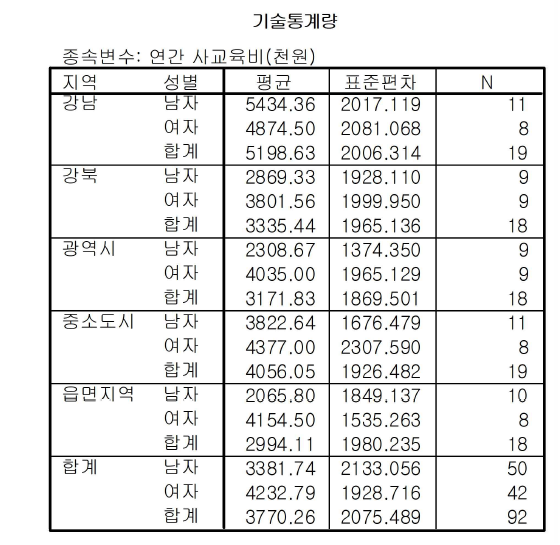
전체 표본의 연간 사교육비 평균은 3770.26이며 분석대상은 92명이다. 지역(location)으로는 요인 1(강남)의 연간 사교육비 평균이 5198.63이며, 요인 2(강북)의 연간 사교육비 평균은 3335.44이다. 또한 성별(gender)을 기준으로 보면 각각 3381.74, 4232.79로 남자보다는 여자의 연간 사교육비 평균이 높다는 것을 알 수 있다.
[분산의 동질성 검정]
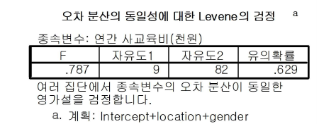
분산분석이 유용하기 위해서는 표본이 무작위적으로 추출되었으며 모집단은 동일한 분산을 가지고 있다는 가정을 충족시켜야 한다. 현재 분석하고 있는 자료가 이러한 가정을 충족시키고 있는지를 알아보기 위해서 Levene 통계량 값이 0.787로써 충분히 크고, 유의확률 = 0.629 > =0.05이어서 모집단의 분산이 동일하다는 귀무가설이 채택된다.
[이원분산 분석표]
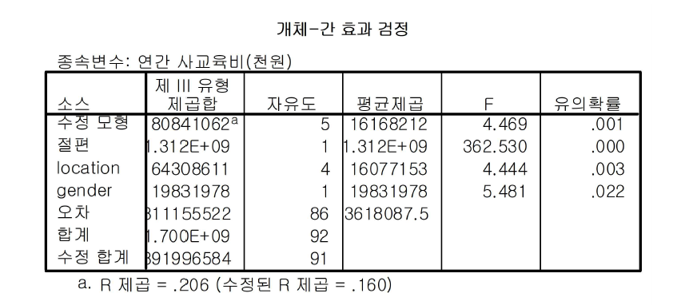
지역(location)에 따른 연간 사교육비 평균의 차이는 F = 4.444, 유의확률 = 0.003로 유의하고, 성별(gender)에 따른 연간 사교육비 평균의 차이는 F = 5.481, 유의확률 = 0.022로 유의한 것으로 나타났다. 즉, 귀무가설을 기각하게 된다.
R 제곱(\(R^2\))은 회귀분석에서 결정계수와 같은 것으로 실험요소에 의해서 설명되어질 수 있는 종속변수의 총변동비율을 위미한다. 앞의 결과를 이용하여 계산하면, R 제곱은 \(\frac{6.431E7+1.983E7}{3.920E8}\)이다. location과 gender의 교호작용을 살펴보면, 유의확률이 0.05보다 크기 때문에 유의하지 않은 것으로 나타났다. 그 결과는 다음과 같다.

분산분석표에서 F 검정결과 유의하지 않은 교호작용을 오차항에 넣어서 새로운 오차항으로 만드는 과정을 오차항에 풀링(pooling)한다고 한다. 이 때 풀링하지 않은 원래 모형을 완전모형, 교호작용이 오차항에 풀링되어 제거된 모형을 축소모형 이라 한다. 완전모형과 교호작용이 제거된 축소모형은 각각
완전모형: \(y_{ijk}=\mu+\alpha_i+\beta_j+(\alpha\beta)_{ij}+\epsilon_{ijk}\)
축소모형: \(y_{ijk}=\mu+\alpha_i+\beta_j+\epsilon_{ijk}\)
와 같다. 위 두 분산분석 표를 비교하면 다음 사실을 확인할 수 있다.
축소모형 오차자유도 = 완전모형 location*gender자유도 + 완전모형 오차자유도
축소모형 오차변동 = 완전모형 교호작용 변동 + 완전모형 오차변동
즉, 교호작용을 오차항에 풀링할 때 제거된 항의 제곱합과 자유도는 오차항으로 합산된다.
[최소유의차를 이용한 사후검정]
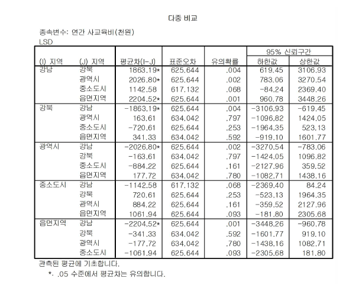
- 지역 (J) 지역 간의 평균차(I-J)에서 강남과 강북의 평균차이는 1863.19이고, 유의확률은 0.004로 유의하기 때문에 귀무가설을 기각한다. 강남과 광역시, 강남과 읍면지역 역시 각각 유의확률이 0.002, 0.001로 유의미한 차이를 보인다.
[결과 : 평균도표]
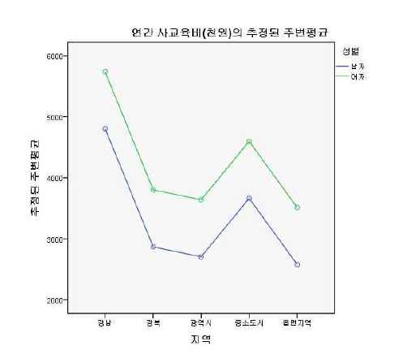
지역과 성별에 따른 연간 사교육비의 평균을 그래프로 나타내 시각적으로 의사결정을 할 수 있게 해준다. 남자보다는 여자의 연간 사교육비의 평균이 높고 지역에 따라 연간 사교육비의 평균이 다르다는 것을 알 수 있다. 특히 강남이 제일 높고 읍면지역이 제일 낮다는 것을 알 수 있다.
예제] 여자 중학생의 체력 중 던지기가 학년과 운동성향(잘 뛰는 정도를 나타내는 세 수준의 요인)에 따라 평균차이가 있는지 검정하시오. < 체격체력.sav >
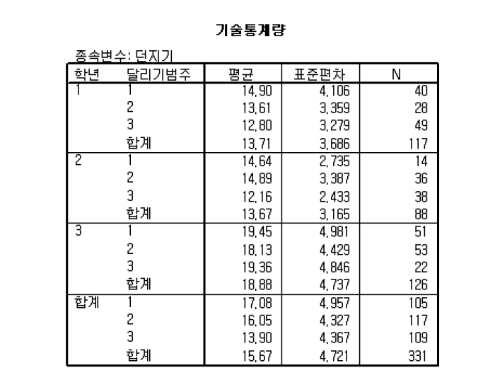
두 요인(학년과 달리기 범주)의 범주 조합에 해당하는 케이스들에 대해서 종속변수의 값의 평균, 표준편차와 케이스 수를 나타내고 있다.
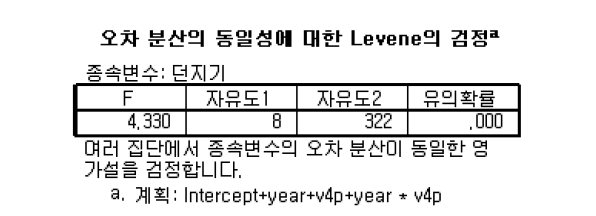
오차 분산의 동일성에 대한 Levene의 검정결과를 보여준다. 유의확률이 0.000으로 나타나서 ‘오차분산이 동일하다’는 귀무가설을 기각하게 된다. 두 번째 표의 기술통계량을 보면, 이 데이터는 평균이 클 때 표준편차가 큰 경향이 있기 때문에 종속변수인 ‘던지기’변수를 로그 변환할 필요성이 있다고 판단된다. (만약 평균이 클 때(or 작을 때) 표준편차가 작은 경향(or 큰 경향)일 경우 종속변수의 역수를 취하거나 종속변수에 제곱근을 역수 취하면 된다.)
변환 메뉴의 변수계산 대화상자에서 ‘던지기(v8)’변수를 자연로그 변환하여 ’로그던지기(lnv8)"변수를 생성한다. 다음, 일변량 선형모형의 일변량 대화상자에서 ‘종속변수’상자에 ‘로그던지기(lnv8)’변수를 입력하고 다른 내용은 이전과 동일한 상태로 하여 실행시키도록 한다.
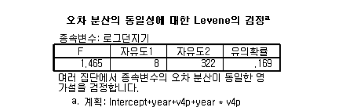 오차 분산의 동일성에 대한 Levene의 검정결과를 보여준다. 로그 변환한 ‘로그던지기’변수에 대한 요인수준 조합에 의한 집단들의 오차분산 검정결과를 보면, 유의확률이 0.169로 나타나서 ‘오차분산이 동일하다’는 귀무가설을 채택한다. 즉, 오차분산의 동일성 가정을 만족하게 되었다.
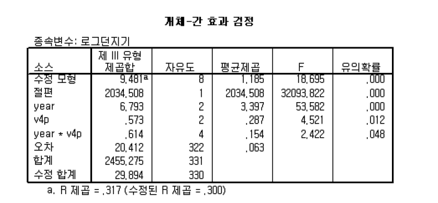
분산분석표(개체-간 효과검정)의 결과를 보자. 제 Ⅲ유형의 제곱합을 선택하였기 때문에 학년과 달리기 범주 요인에 대한 주효과와 두 요인의 상호작용 효과는 각각 다른 요인을 통제한 후의 효과로 계산되었다.
학년(YEAR)요인에 대한 유의확률은 0.000이므로 ‘학년에 따라 던지기의 차이가 있다’라고 할 수 있으며, 달리기 범주(V4P) 요인에 대한 유의확률은 0.012이므로 유의수준 5%에서 ‘달리기 범주 집단에 따라 던지기의 차이가 있다’라고 결론을 내린다. 또한, 학년과 달리기 범주의 상호작용에 대한 유의확률은 0.048로서 유의수준 5%에서는 귀무가설을 기각할 수 있다. 즉, ‘학년과 달리기 범주의 상호작용 효과가 존재한다.’고 할 수 있다.
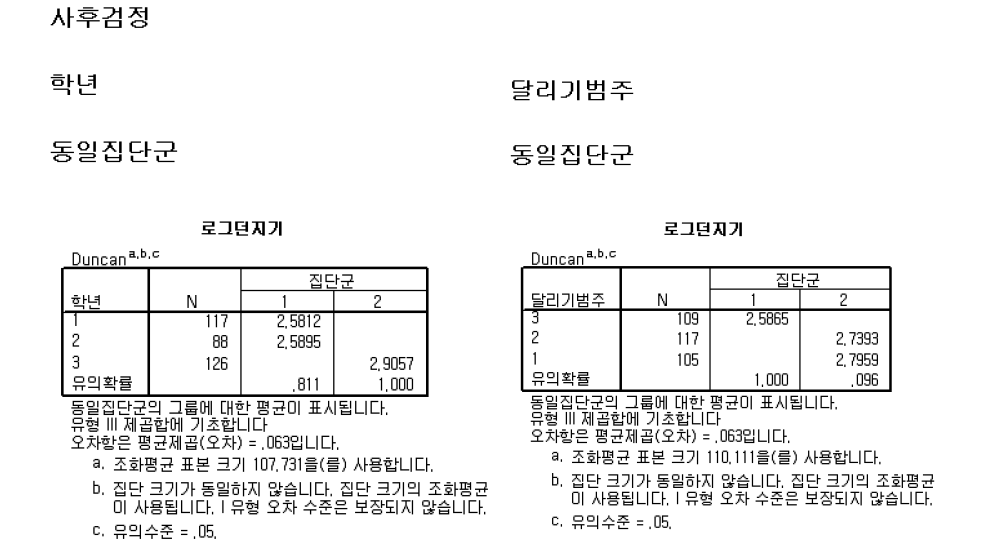
관측평균의 사후분석 다중비교 대화상자에서 ‘사후검정변수’상자에 있는 요인들에 대해 다중비교 방법을 선택하여 얻은 다중비교 출력결과이다. 학년 요인을 보면, 1학년과 2학년이 하나로 묶이고 3학년이 다른 묶음으로 나뉘는 것을 볼 수 있다. 즉, 1학년과 2학년간은 던지기에 있어서 유의한 차이가 없고 1학년과 3학년 간, 2학년과 3학년 간에는 유의한 차이가 있는 것으로 나타났다. 달리기 범주요인을 보면, 범주1과 범주2가 하나로 묶이고 달리기가 늦은 범주3이 다른 묶음이 되는 것을 볼 수 있다. 즉, 달리기 범주1과 2는 던지기의 차이가 없고 이 두 범주는 범주 3과 던지기에 있어서 유의한 차이를 보인다.
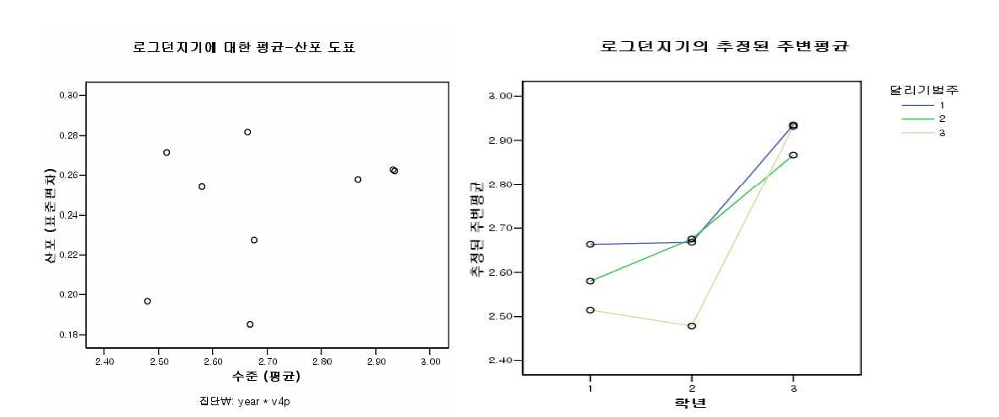
평균-산포 도표는 옵션 대화상자에서 ‘평균-산포 도표’를 선택하였을 때 출력된다. 이 도표는 모든 요인수준 조합에서 종속변수의 평균과 표준편차(혹은 분산)를 산점도 형태로 나타낸 것이다.
로그 변환한 ‘로그던지기’ 변수에 대한 평균-산포 도표는 오차분산의 동일성을 확인해준다. 던지기 변수(v8)를 그대로 사용했다면 평균-산포 도표에서 평균과 표준편차 간에 선형성이 있는 것을 볼 수 있을 것이다.
두 번째 그림은 프로파일 도표 대화상자에서 선도표를 위한 요인변수들을 선택하였기 때문에 출력된 것이다. 두 요인의 상호작용을 나타내는 선도표를 보면, 달리기 범주의 중간 집단은 학년이 높아감에 따라 던지기를 잘하는 경향을 보이는데 반해서 달리기를 잘하는 집단과 못하는 집단에서는 2학년에서 평균던지기가 감소했다가 다시 증가하는 경향을 보인다. 이와 같이 상호작용이 있는 경우에서는 선도표에서 선들의 패턴이 다르게 나타난다.